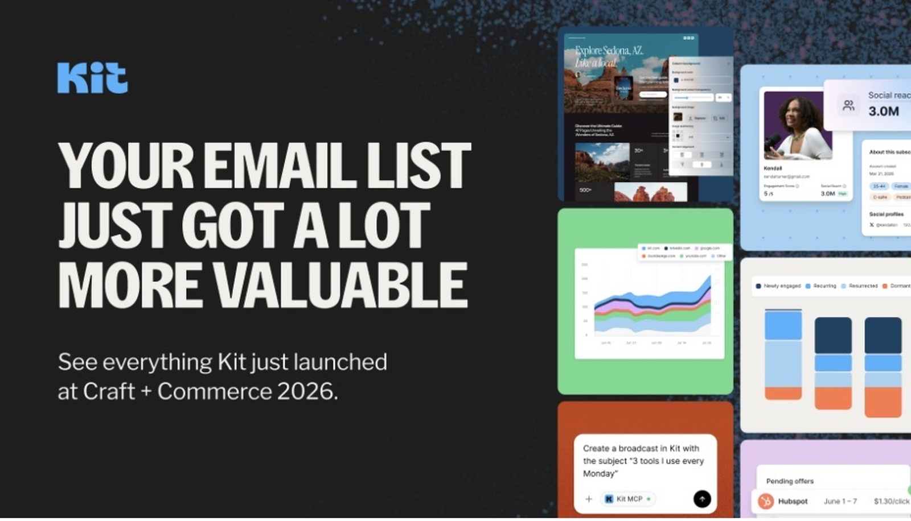

Kit Just Made Your Email List a Lot More Valuable: Everything New From Craft + Commerce 2026

If you're a creator, solopreneur, or small business owner who lives and dies by your email list, you'll want to pay attention to what just happened at Craft + Commerce 2026.
Kit — the platform formerly known as ConvertKit — used its flagship event to announce one of its biggest waves of product launches yet.
We've gone through the announcements to break down what's actually new, who it's for, and whether Kit deserves a serious look if you're evaluating email marketing tools right now.
What Was Announced at Craft + Commerce 2026?
Kit's message this year is simple: your email list is more valuable than you think.
Instead of introducing just one headline feature, Kit announced a broad collection of updates covering subscriber intelligence, analytics, AI, monetization, automation, landing pages and integrations.
Here are the biggest changes:
- Subscriber Signals — deeper subscriber intelligence that can help creators understand who is actually on their list, including professional, demographic and social information.
- Kit MCP — connects AI tools such as ChatGPT, Claude, Gemini and Cursor directly with Kit, allowing AI to work with real Kit data and perform supported actions with user-controlled permissions.
- Engagement Analytics — new reporting that shows how subscriber engagement changes over time and which sources bring in subscribers who actually stick around.
- Newsletter Sponsorships — a built-in way for eligible creators to find sponsorship opportunities and monetize their newsletters.
- Abandoned Checkout — automated recovery emails for abandoned purchases connected through Shopify, Fourthwall and Wix.
- New Landing Page Editor — a rebuilt landing-page editor with templates, customization options and Kit automation built directly into the experience.
- New App Store integrations — new integrations covering CRM, memberships, events, SMS and other parts of a creator's business.
Kit also highlighted additional integrations and creator-focused infrastructure, showing that the platform is expanding beyond traditional email marketing.
Why This Matters If You're Comparing Email Tools
Several of these updates stand out if you're comparing Kit with alternatives such as Mailchimp or Beehiiv.
- Newsletter Sponsorships can turn an existing audience into another potential revenue stream.
- Subscriber Signals goes beyond simply counting subscribers by adding more context about the people on your list.
- Engagement Analytics focuses on long-term audience behavior rather than only looking at the results of an individual email.
- Kit MCP is particularly interesting for creators who already use AI for writing, research, analysis and marketing.
- Abandoned Checkout gives Kit a more direct connection between email automation and revenue recovery.
Taken together, these updates show that Kit is positioning itself as more than an email-sending platform. The goal is increasingly to give creators one place to manage, understand and monetize their audience.
Subscriber Signals: More Than Just an Email List
One of the more interesting announcements is Subscriber Signals.
Traditional email dashboards tell you how many people opened or clicked an email. Subscriber Signals is designed to add more context about who those subscribers actually are.
Kit says the feature can surface information such as professional context, location, social reach and engagement signals, helping creators identify high-value subscribers and potential opportunities hidden inside their existing audience.
Kit MCP: AI Can Work With Your Actual Audience Data
Kit MCP may be the most interesting update for people following the rapid growth of AI-powered workflows.
Rather than using AI only to generate generic email copy, Kit MCP connects supported AI tools directly with a Kit account.
Depending on permissions and the supported functionality, creators can use AI to work with real subscriber data, draft broadcasts, manage tags and perform other actions without constantly switching between tools.
The important distinction is that the AI can work with the creator's actual Kit data rather than giving advice based only on generic information.
Newsletter Sponsorships Could Add Another Revenue Stream
Kit is also putting more emphasis on newsletter monetization.
With Newsletter Sponsorships, eligible creators can receive sponsorship opportunities matched to their audience and content.
Creators retain control over which sponsorships they accept, while Kit handles much of the matching and administrative process.
For a creator with a growing newsletter, this could turn an audience that was previously used mainly to sell products or services into another potential source of revenue.
Abandoned Checkout: Email Meets Revenue Recovery
Kit's abandoned checkout functionality is another practical addition.
When a subscriber starts a purchase through supported platforms such as Shopify, Fourthwall or Wix but doesn't complete it, Kit can trigger an automated recovery sequence.
The emails can use information about the products the customer abandoned, making the follow-up more relevant than a generic reminder.
Should You Try Kit?
If your business already depends on an email list — or you're serious about building one — Kit is becoming a more interesting option.
The biggest change isn't necessarily one individual feature. It's the direction of the platform.
Kit is combining email marketing with audience intelligence, AI, analytics, monetization, commerce and third-party integrations.
That makes it worth considering if you're trying to reduce the number of separate tools involved in running your creator business.
Want to see what Kit launched?
Try Kit and explore the latest features from Craft + Commerce 2026.
Try Kit FreeFrequently Asked Questions
Is Kit still ConvertKit?
Yes. Kit is the current name of the platform formerly known as ConvertKit.
Do I need a paid plan to use the new features?
Feature availability varies by product and plan. Some of the new features are available on paid plans, while other tools have free functionality. Check Kit's current plan details before subscribing.
Is Kit MCP available to everyone?
Kit MCP is available on supported paid plans. Availability and supported functionality can change as Kit continues expanding the integration.
Is Subscriber Signals available on every Kit plan?
No. Kit currently positions Subscriber Signals as a Pro feature with access requirements.